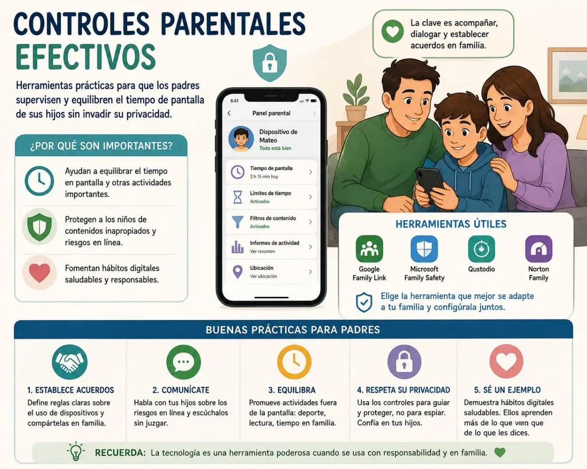
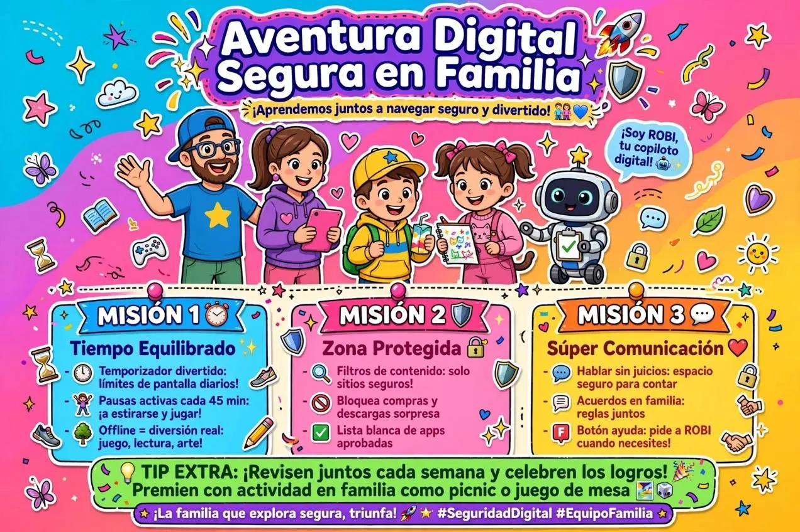

Controles Parentales Efectivos: Guía Práctica para Padres
¿Qué son los controles parentales?
Los controles parentales son herramientas y estrategias que permiten a los padres supervisar, limitar y orientar el uso que sus hijos hacen de dispositivos electrónicos (celulares, tablets, computadoras, consolas) y de internet. No se trata de espiar, sino de acompañar, proteger y enseñar a usar la tecnología de forma responsable.
El desafío: ¿Cómo supervisar sin invadir la privacidad?
Muchos padres se sienten entre dos extremos: dejar que sus hijos naveguen sin límites o convertirse en "policías digitales" que revisan cada mensaje. La clave está en el equilibrio: Supervisar no es espiar. Es estar presente, establecer reglas claras y construir confianza.
| ❌ Evita | ✅ Haz |
|---|---|
| Revisar mensajes y chats en secreto | Hablar abiertamente sobre lo que ven en línea |
| Prohibir todo sin explicar por qué | Establecer reglas con acuerdos mutuos |
| Usar el celular como castigo o recompensa | Enseñar autorregulación desde temprano |
| Ignorar lo que hacen en línea | Mostrar interés genuino en sus actividades digitales |
Herramientas prácticas por plataforma
iPhone / iPad — Tiempo de Uso (Screen Time)
Apple incluye esta herramienta gratis en todos sus dispositivos:
- Límites de tiempo de app: Puedes establecer cuánto tiempo al día puede usar ciertas apps (redes sociales, juegos, etc.).
- Tiempo de inactividad: Programa horarios donde el dispositivo solo permite llamadas o apps esenciales (ideal para dormir o estudiar).
- Restricciones de contenido: Bloquea contenido para adultos, compras dentro de apps, o sitios web inapropiados.
- Solicitudes: Tu hijo puede pedirte más tiempo o acceso a una app, y tú decides desde tu dispositivo.
Cómo activarlo: Ajustes → Tiempo de Uso → Activar.
Android — Family Link (de Google)
Google Family Link es gratuita y permite:
- Ver cuánto tiempo pasa en cada app.
- Establecer límites diarios de uso de pantalla.
- Bloquear el dispositivo a ciertas horas (hora de dormir, tareas).
- Aprobar o rechazar descargas de apps desde Google Play.
- Ver la ubicación del dispositivo (útil para seguridad física).
Cómo activarlo: Descarga "Family Link para padres" en tu celular y "Family Link" en el del niño.
Windows — Controles parentales de Microsoft
Si tu hijo usa una computadora con Windows:
- Crea una cuenta de Microsoft para menores vinculada a la tuya.
- Desde tu cuenta puedes:
- Limitar el tiempo de uso de la PC.
- Filtrar sitios web inapropiados.
- Ver un resumen de actividad semanal.
- Aprobar compras en la Microsoft Store.
Cómo activarlo: Configuración → Cuentas → Familia y otros usuarios.
Nivel de red: el router de tu casa
Algunos routers modernos permiten controlar el acceso a internet desde el propio router:
- Bloquear sitios web para todos los dispositivos conectados.
- Programar horarios de conexión (por ejemplo, apagar WiFi a las 10 p.m.).
- Ver qué dispositivos están conectados y cuánto ancho de banda usan.
Marcas como TP-Link, ASUS, Netgear y Google Nest tienen apps para gestionar esto fácilmente.
Consolas de videojuegos
- PlayStation: Controles parentales en Ajustes → Gestión familiar.
- Xbox: Family Settings app para limitar tiempo de juego, compras y contenido.
- Nintendo Switch: Controles parentales desde la app oficial en tu celular.
Estrategias de comunicación: la herramienta más poderosa
Las herramientas tecnológicas ayudan, pero la conversación es lo que realmente protege a tu hijo. Aquí algunas estrategias:
1. Establece reglas juntos
No impongas límites de arriba hacia abajo. Invita a tu hijo a participar en la creación de las reglas. Cuando ellos ayudan a diseñarlas, las respetan más.
Ejemplo de acuerdo familiar:
- No celular durante las comidas.
- Pantalla apagada 1 hora antes de dormir.
- Tareas y deberes primero, pantalla después.
- Compartir contraseñas solo en caso de emergencia (no revisar chats sin avisar).
2. Crea espacios y momentos sin pantalla
- Comidas en familia sin dispositivos.
- Actividades al aire libre los fines de semana.
- Habitaciones libres de pantallas (especialmente el dormitorio).
3. Sé el ejemplo
Si tú estás todo el tiempo en el celular, tu hijo aprenderá ese comportamiento. Practica lo que predicas.
4. Habla sobre lo que ven en línea
Pregunta regularmente:
- "¿Qué apps usaste hoy?"
- "¿Viste algo que te hizo sentir incómodo?"
- "¿Alguien te escribió algo raro?"
Crea un ambiente donde tu hijo no tenga miedo de contarte si algo sale mal.
5. Enseña, no solo protege
Explica por qué ciertos sitios o comportamientos son peligrosos:
- Los datos personales no se comparten con desconocidos.
- Las fotos que suben pueden quedar para siempre.
- Los "amigos" en línea pueden no ser quienes dicen ser.

| Edad | Recomendación general | Enfoque de los padres |
|---|---|---|
| 2-5 años | Máximo 1 hora al día de contenido educativo de alta calidad. | Acompañar siempre. Evitar pantallas durante comidas y antes de dormir. |
| 6-12 años | 1-2 horas diarias con supervisión. | Establecer límites claros. Usar Family Link o Screen Time. Conversar sobre lo que ven. |
| 13-17 años | Negociar límites con el adolescente. | Menos control técnico, más confianza y diálogo. Enseñar autocontrol. |
Señales de alerta: ¿cuándo preocuparse?
Presta atención si tu hijo:
- Se enoja o ansía excesivamente cuando le quitas el dispositivo.
- Prefiere la pantalla sobre actividades que antes disfrutaba.
- Duerme mal o tiene dificultades para concentrarse.
- Se aísla de amigos y familia.
- Miente sobre el tiempo que pasa en línea.

Los controles parentales no son una barrera de seguridad perfecta, ni un sustituto de la confianza. Son una herramienta más en la crianza digital. Lo más importante es que tu hijo se sienta acompañado, no vigilado. Cuando los límites se construyen con amor, respeto y diálogo, los niños aprenden a navegar el mundo digital con seguridad y criterio propio.